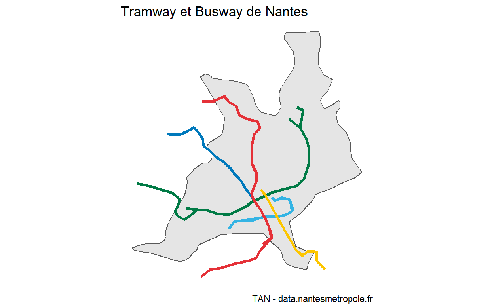

Objectifs : Nous allons cartographier des données opendata de la TAN.
Vous aurez besoin des packages suivants
Trois datasets sont utilisés ici :
les arrêts de la tan
Importer les données dans R
La table des arrêts
La table des circuits
Avec scale_color_manual() ajuster les couleurs de la carte.
Faire de même et utilisant la variable route_color et la fonction scale_color_identity() de ggplot2.

Identifier par filtre spatial les arrêts de la ligne 2 du Tranway.
Cartographier les arrêts.
Réaliser par jointure spatiale le rattachement de toutes les stations à leurs circuits.
Que constatez vous ?
Vous devez partir du CNAM pour vous rendre place du Bouffay pour la réouverture des terrasses.
Voici comment créer un objet sf à partir des coordonnées gps du cnam :
cnam <- data.frame("lat" = 47.250528, "lon" = -1.554224) %>%
st_as_sf(coords = c("lon", "lat"), crs = 4326)
Faites de même avec la place du Bouffay et trouver les arrêts de tramway ou busway les plus proches de ces deux sites.